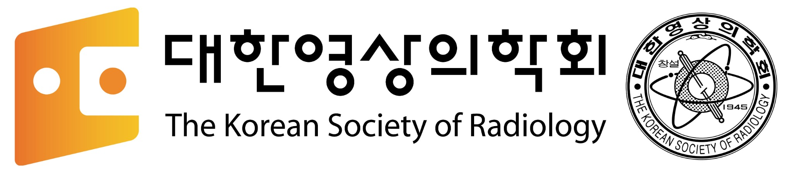

적정성
검사가 필요한 상황과 재검사 판단 기준을 명확히

중복·재촬영 저감을 위한 대한영상의학회의 기록
환자 안전과 진단의 연속성을 지키기 위해, 대한영상의학회는 2013년부터 검사 적정성·영상 품질·정보 교류·용어 표준화의 기준을 연구하고 해법을 제시해 왔습니다.
검사가 필요한 상황과 재검사 판단 기준을 명확히
전원·교류 영상이 진료에 충분한지 객관적으로 평가
표준 검사명과 영상·판독소견을 안전하게 이어 불필요한 반복 감소
전원 환자가 30일 이내 동일 부위를 다시 검사받은 비율입니다. 이 수치에는 필요한 추가·추적검사와 불필요한 재검사가 모두 포함되어 있습니다.
94만 4,172명 중 25만 3,438명
22만 4,894명 중 3만 944명
CT 491.5억 + MRI 159억
01 · 문제를 정확히 정의하기
필요한 검사까지 위축되어 환자 안전을 해칠 수 있습니다.
환자 안전과 건강보험 재정을 함께 지킬 수 있습니다.
02 · 2013년부터 축적한 근거
재검사를 4가지 유형으로 정의하고 적정성 평가와 영상정보 교류의 정책 틀을 마련했습니다.
7개 분야 전문가 합의 지침을 만들고 5개 기관에서 재검사의 사유와 기관별 편차를 확인했습니다.
가이드라인 전후 13,209건의 외부 CT를 분석하고 사유코드 기반 관리의 필요성을 확인했습니다.
표준판독소견서, 화질평가표, 사유코드 청구, 영상 저장용 수가를 하나의 실행안으로 연결했습니다.
5개 상급종합병원의 CT·MRI 검사 코드 1,190개를 LOINC와 매핑해 기관 간 영상정보 교류의 표준 기반을 마련했습니다.
이미 마련된 도구를 청구·심사·정보교류 제도에 연결할 실행 주체와 일정을 제안합니다.
03 · 재촬영 사유코드
원 검사만으로 진단이나 치료방향 판단이 곤란
화질 불량, 검사부위 불충분 또는 기타 정당한 이유
합병증 의심, 임상양상 변화 또는 환자에게 분명한 이득
진단·치료방향 변화 없이 이유 없이 반복
원 검사와 관련 없는 다른 목적으로 시행
관리 대상은 모든 재촬영이 아니라 U(불필요한 재검사)입니다. X는 횟수상 재검사처럼 보여도 원 검사와 목적이 다른 검사이므로 별도로 해석해야 합니다.
04 · 근거 자료실
05 · 지금 필요한 정책
청구 단계에서 재촬영 사유코드 입력을 의무화하면 재촬영이 정말 필요한지 한 번 더 고민할 수 있고, 이후 통계 처리도 용이합니다.
외부 의료영상을 PACS에 저장만 하는 수가를 신설하여, PACS에 영상을 남기기 위한 재촬영, 재판독을 줄입니다.
LOINC 기반 검사명, DICOM 원본, 표준판독소견서, CT 선량정보를 함께 전달합니다.
의료영상 품질관리를 강화하여 저질의 검사로 인한 재촬영을 줄이고, 객관적 화질평가표로 재촬영이 필요한 경우를 일관되게 분류할 수 있습니다.
보건복지부·심평원·학회가 우선순위와 시행 일정을 정하는 공동 체계를 만듭니다.
대한영상의학회의 입장
“불필요한 재검사를 줄이는 것과 임상적으로 정당한 추적·추가검사를 보장하는 것은재검사 사유코드 의무화, 영상정보 교류와 표준용어 사용, 영상 품질관리 강화와 객관화, 합리적 보상체계가 함께 갖춰지면, 불필요한 재촬영을 줄이면서 의학적으로 필요한 재촬영은 보장할 수 있습니다.
상충하지 않습니다.”
재검사를 단순한 ‘반복 촬영’이 아니라 임상적 목적과 원인에 따라 구분해야 한다는 정책 틀을 세웠습니다.
같은 부위에 대해 1개월 이내 반복 시행된 검사를 재검사로 정의했습니다.
재검사를 무관검사·추적검사·중복검사·추가검사로 구분하고, 추가검사는 다시 필요한 검사와 불필요한 검사로 나눴습니다.
당시 청구자료에서 타 기관 촬영 후 30일 이내 재촬영률은 CT 19.5%, MRI 9.9%로 확인됐습니다.
장비의 연식만이 아니라 성능과 결과 영상의 질을 지속적으로 관리하고, 도입부터 폐기까지 이력을 관리할 것을 제안했습니다.
재촬영 건수만 세는 방식에서 벗어나 ‘왜 다시 찍었는지’를 분류하고 평가하는 근거가 처음으로 체계화됐습니다.
정책의 초점은 모든 재검사를 줄이는 것이 아니라, 정당한 검사는 보장하고 불필요한 검사만 정확히 찾아내는 데 있어야 합니다.
[최종보고서]고가영상검사_적정관리_방안연구_v3.0_20131213.pdf
재검사를 무조건 제한하는 규정이 아니라, 검사로 얻는 이득과 위험을 함께 따져 최선의 진료를 돕는 지침입니다.
신경두경부·흉부·복부·비뇨생식기·심장혈관·근골격·소아영상 분야가 참여했습니다.
92명의 합의전문가가 델파이 방식으로 권고안의 적절성을 검토했습니다.
화질 불량, 촬영 범위 누락, 임상 상태 변화, 치료 후 평가 등 재검사가 정당한 상황을 구체적으로 제시했습니다.
가이드라인은 개별 환자의 상황과 의료진의 판단을 대체하지 않는다고 명시했습니다.
환자에게 재검사의 필요성을 설명하고 의료진이 일관된 기준으로 판단할 수 있는 공통 언어를 마련했습니다.
좋은 가이드라인은 필요한 검사를 막는 장벽이 아니라, 필요한 검사와 불필요한 검사를 구별하는 안전장치입니다.
CT 검사 및 재검사 가이드라인.pdf
기관마다 환자 구성과 진료 특성이 달라, 하나의 재촬영률만으로 적정성을 판단하기 어렵다는 사실을 보여줬습니다.
5개 기관의 평균 재검사율은 13.3%였으며 기관별로 약 10%에서 23%까지 차이가 났습니다.
두부·흉부·복부 CT가 재촬영의 대부분을 차지했지만 부위별 분포도 기관마다 달랐습니다.
외상환자 비중, 수술 전 평가, 임상시험 등 통제하기 어려운 진료 특성이 재검사율에 영향을 줬습니다.
일부 사유는 평가자의 주관이 개입할 수 있어 더 객관적인 기준이 필요했습니다.
수가 삭감이나 일률적 목표치보다 사유코드, 증례 검토, 기관 특성 보정이 먼저라는 점을 확인했습니다.
재촬영률은 출발점이지 판정문이 아닙니다. 적정성을 말하려면 반드시 이유를 함께 봐야 합니다.
CT_MRI_가이드라인_적용_전_실태조사_보고서_최종(20140721)수정.pdf
재촬영 건수의 증감만으로 가이드라인 효과를 판단할 수 없고, 임상 사유와 조사 조건을 함께 봐야 한다는 결과였습니다.
배포 전 외부 CT 6,762건 중 1,159건(17.1%), 배포 후 6,447건 중 1,296건(20.1%)이 재검사됐습니다.
기관별 재촬영률은 0.8%에서 38.3%까지 큰 편차를 보였습니다.
조사 기간이 짧고 배포 전·후 조사 월이 달라, 단순 전후 비교로 인과관계를 판단할 수 없었습니다.
상반기 실태조사를 포함하면 전체 재검사 중 최소 약 20%는 발생을 막을 수 있는 유형으로 추정됐습니다.
가이드라인 배포만으로 행동이 즉시 변하지 않습니다. 청구 단계 사유 입력과 제도적 운영체계가 함께 있어야 합니다.
측정 가능한 사유코드를 청구체계에 넣어야 불필요한 재검사만 선별적으로 관리할 수 있습니다.
CT,MRI 가이드라인 시범운영 평가연구 최종보고서.pdf
같은 ‘재촬영’이라도 추가 진단, 화질 문제, 합병증 의심, 임상 변화, 이유 없는 반복은 전혀 다른 경우입니다.
조영증강이 없어 종괴 평가가 어려운 경우는 필요한 추가검사(S)의 예로 제시됐습니다.
심한 호흡 인공물과 10 mm 절편으로 판독이 어려운 경우는 화질 불량(D1)의 예였습니다.
수술 후 합병증 의심(F1)과 새로운 증상 발생(F2)은 정당한 추적검사로 분류됐습니다.
임상 변화나 치료 계획의 변화 없이 다시 촬영한 경우는 불필요한 재검사(U)로 분류됐습니다.
사례 중심 설명을 통해 ‘재촬영=과잉진료’라는 단순한 등식이 왜 성립하지 않는지 보여줍니다.
정책 통계에도 임상 현장에서 사용하는 것과 같은 수준의 원인 분류가 필요합니다.
CT 재검사 실태조사 결과보고_정승은.pptx
좋은 영상을 안전하게 전달하고 신뢰할 수 있어야, 전원받은 병원이 다시 촬영하지 않고 기존 검사를 활용할 수 있습니다.
흉부·심장·복부·비뇨기·신경·유방·근골격 7개 분야의 구조화된 표준판독소견서를 개발했습니다.
14종의 표준 검사 프로토콜과 19종의 화질평가표를 만들고 최소 70% 이상 충족을 제안했습니다.
DICOM 영상, 판독소견서, CT 선량정보를 함께 전달하는 정보교류 구조를 제안했습니다.
단순 저장을 위해 재판독을 의뢰하는 왜곡을 줄이도록 판독료보다 낮은 ‘영상 저장용 수가’를 제안했습니다.
재촬영 문제를 개별 의사의 선택이 아니라 품질·정보·보상체계가 연결된 시스템 문제로 확장했습니다.
원 영상의 품질을 믿고, 필요한 정보를 함께 받고, 저장 비용을 보상하는 체계가 재촬영을 줄입니다.
영상품질기준(편집)최종-최종.pdf
재촬영을 줄이기 위한 해결책은 이미 ‘사유 기록–화질 평가–정보 전송–적정 보상’의 형태로 제시됐습니다.
전문가 패널이 3라운드 델파이 합의를 거쳐 분야별 표준판독소견서를 개발했습니다.
재촬영 사유코드를 청구할 때 입력하면 실제 재촬영을 줄이고 사후 평가에도 활용할 수 있다고 제안했습니다.
영상 저장에 별도 수가가 필요하며 판독보다 낮게 책정할 수 있다는 구체적 방안을 제시했습니다.
저선량 폐 CT 등에서 촬영 범위·절편 두께·선량정보를 포함한 품질 기준의 예를 제시했습니다.
연구 성과를 실제 청구·심사·정보교류 제도로 옮기기 위한 실행안이 명확하게 정리된 자료입니다.
새 연구보다 이미 만들어진 도구를 제도에 연결할 실행 주체와 일정이 필요합니다.
영상정보교류의 효용성을 높이기 위한 영상품질기준 결과발표회 발표자료.pptx
병원마다 다른 CT·MRI 검사명을 국제표준 LOINC와 연결해 의료영상정보가 기관을 넘어 같은 의미로 교류될 수 있는 기반을 마련했습니다.
2023년 고시된 한국 핵심교류데이터(KR CDI)에서 진단영상검사는 77개 교류항목 중 하나로, 검사 오더 코드를 LOINC로 표준화하거나 매핑해야 하는 영역입니다.
5개 상급종합병원에서 CT·MRI 검사 코드 1,190개를 수합해 RELMA로 LOINC에 매핑하고, 병원별 유사 검사명을 같은 LOINC 코드 기준으로 묶었습니다.
일반적이고 다빈도인 검사는 비교적 쉽게 매핑됐지만, 저선량·동적검사·검사 목적·소아·약물·3D 후처리 등 세부 정보와 특수 검사명은 기존 LOINC만으로 충분히 표현하기 어려웠습니다.
신규 CT LOINC 코드 신청, MRI 검사명의 추가 검토, 학회 용어위원회의 확대, 단순촬영·투시촬영·중재시술로의 표준화 범위 확장을 제안했습니다.
영상 파일을 보내는 것만으로는 정보교류가 완성되지 않습니다. 검사명과 코드의 의미까지 같아야 다른 기관이 기존 검사와 판독정보를 정확히 이해하고 활용할 수 있습니다.
병원·학회·정부기관이 매핑표를 함께 고도화하고 신규 표준코드를 관리해야, 환자 중심의 영상정보 교류가 지속 가능한 제도로 자리 잡을 수 있습니다.
용어표준화-영상의학회 최종보고서-보건의료정보원제출용.pdf